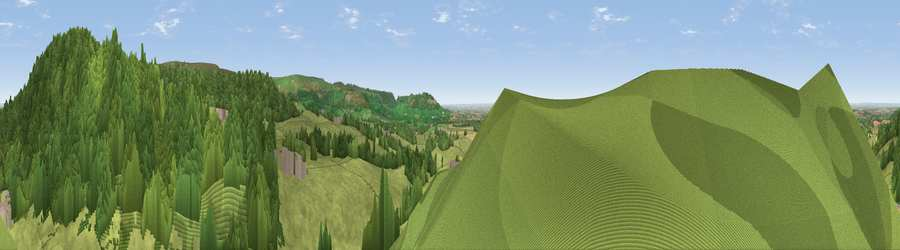

Viewpoint near Over Silton
#3205 in England · top 11% of its area beats it · near Over SiltonThe view, rendered

A 360° render of this exact spot computed from the terrain model, tree cover and land cover — summer colours, afternoon light, calibrated against photographs of famous viewpoints. Real trees, hedges and buildings will differ in detail.
The panorama
Grey silhouette: terrain skyline in each direction (720 bearings, Earth curvature and refraction included). Dashed green: skyline with trees (+15 m) and buildings (+8 m) as obstacles. Blue strip: how far the ground is visible on each bearing.
Where the view opens
Wedge length = distance to the farthest visible ground on that bearing (vegetation-aware). Rings at 10, 25 and 50 km.
What fills the view
47% grassland · 30% woodland · 22% cropland · 1% built-up
Angular shares of the visible panorama (visual magnitude), not map area. Landscape diversity 0.48 (0–1 Shannon).
Key numbers
More beautiful places nearby
The staircase of upgrades: each row has a higher view potential than everything closer. Driving times are estimates from straight-line distance, calibrated against real road routing — check an actual route before setting out.
| Place | Direction | Drive | Score |
|---|---|---|---|
| Viewpoint near Over Silton | NNE · 1 km | ~3 min | 78.5 |
| Black Hambleton | ENE · 3 km | ~8 min | 79.9 |
| Viewpoint near Kirby Knowle | S · 6 km | ~12 min | 80.5 |
| Beacon Hill | NNE · 7 km | ~14 min | 84.7 |
| Carlton Bank | NE · 12 km | ~22 min | 85.1 |
| Roseberry Topping | NE · 23 km | ~38 min | 85.8 |
| Viewpoint near Lazenby | NNE · 28 km | ~44 min | 86.4 |
| Warsett Hill | NE · 37 km | ~56 min | 86.8 |
54.33275, -1.31333 · source: screening · position refined by local search. Computed location — check access rights before visiting.